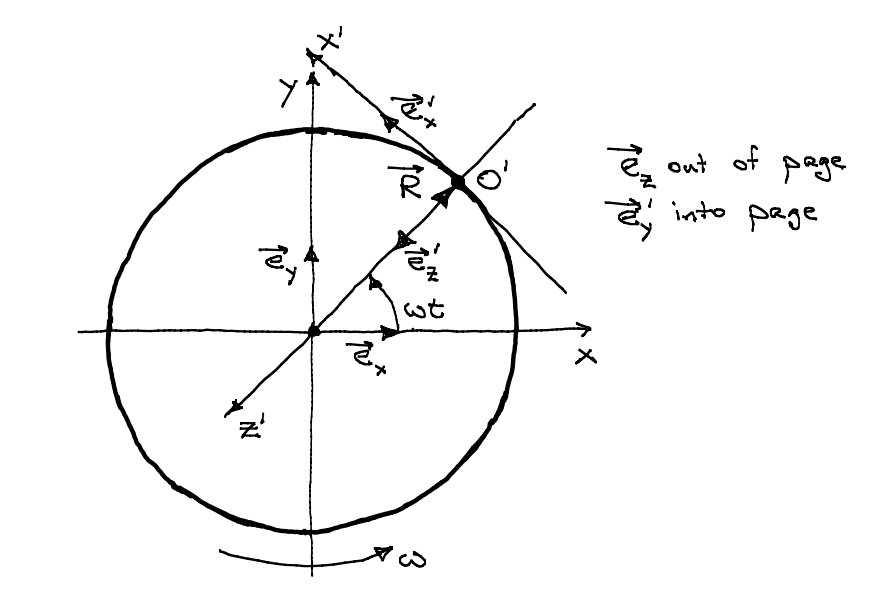

O’Neill 空间站ä¸ç‰©ä½“çš„è¿�动
Contents
我们在地ç�ƒä¸Šç”Ÿæ´»ï¼Œä¼šä½“验到é‡�力作用。虽然很多时候我们都想摆脱é‡�力，自由的é£�翔，但是é‡�力对äº�我们的生活和å�¥åº·æœ‰å¾ˆé‡�è¦�的作用。例如我们走路，如æ�œæ²¡æœ‰é‡�力，轻轻一碰地é�¢å°±é£˜èµ·æ�¥äº†ï¼Œèµ°èµ·è·¯æ�¥å�¯å°±å¾—手脚并用了。或许这并ä¸�å��，å�¯æ˜¯å¦‚æ�œæˆ‘们想è¦�冲一æ�¯çƒèŒ¶ï¼Œè°�知é�“å�´æ€�么也没法把çƒæ°´å€’出æ�¥ã€‚æ›´è¦�命的事情是，在失é‡�状æ€�下，人的骨骼和肌肉的会有严é‡�的问题。[1]
所以，如æ�œè¦�å»ºé€ å¤§è§„æ¨¡çš„æ°‘ç”¨ç©ºé—´ç«™ï¼Œéœ€è¦�先解决失é‡�的问题。一个比较有趣的方法是 O’Neill æ��出的通过让空间站旋转æ�¥æ¨¡æ‹Ÿé‡�力。
O’Neill Cylinder
O’Neill è¿™ç§�空间站的最简å�•çš„模å�‹æ˜¯ä¸€ä¸ªæ—‹è½¬çš„圆桶，例如下图里é�¢è¿™ä¸ªå¤§å�‹çš„桶状结æ�„：

（图片��：http://imageshack.us/photo/my-images/11/1109702023694.jpg/ ）
当然，我们è¦�ç ”ç©¶ç‰©ç�†ï¼Œä¸�需è¦�这么花哨，å�ªéœ€è¦�画一个圆ç’就行了：

（图片�� http://www.dvandom.com/coriolis/spacestation.html ）
å�ªè¦�让这个圆ç’适当的旋转，生活在圆ç’内å£�的人就å�¯ä»¥ä½“验到模拟的é‡�力。这是一个比较容易ç�†è§£çš„ç�°è±¡ï¼Œæ¯”如æ�‚技团常常表演的水æµ�星节目，也就是拿了一对盛有水的碗，用绳å�è¿�èµ·æ�¥ï¼Œç„¶å��旋转他们，如下图：

旋转时让碗å�£æœ�å�‘å†…ä¾§ï¼Œè¿™æ ·æ°´ä¸�会洒出æ�¥ã€‚å�Ÿå› 大家也都清楚，是一ç§�离心作用。
Coriolis Effect
但是，站在空间站内�的人们还会体验到�外一�作用，就是 Coriolis 作用。关�这�作用，�以看下�的这个视频：
（iOS请点击视频链�：http://v.youku.com/v_show/id_XNjA0NjY5MzY=.html ）
这个视频说的是，如æ�œæˆ‘们站在一个转动的圆盘上é�¢å¼€ç‚®ï¼Œä¼šå�‘ç�°ä¼¼ä¹�有一å�ªç¥�奇的手把炮弹æ�¨å�‘了一边，而ä¸�是我们常识ä¸çš„（在地é�¢çš„投影）是一æ�¡ç›´çº¿ã€‚è¿™å�ªç¥�奇的手就是科里奥利力。当然，如æ�œæˆ‘们站在地é�¢ä¸Šçœ‹ï¼Œè€Œä¸�是圆盘上，炮弹自然还是一æ�¡ç›´çº¿ã€‚
当然 Coriolis effect 在地ç�ƒè¡¨é�¢ï¼ˆç»�大多数地点）也是有的，å�ªä¸�过在日常起居生活ä¸è¿™ç§�效应很å°�，所以我们下é�¢çš„讨论自由è�½ä½“è¿�动的时候就忽略地表的 Coriolis effect 了。
自由�体�动
我们生活ä¸æœ€ç†Ÿæ‚‰çš„è¿�动之一是自由è�½ä½“è¿�动，例如：
（当然，我们通常说的自由�体是指是�想的情况，没有空气阻力。）
�速度为零，��离地�高度为 h 的地方开始自由�体的物体的�动是由下�的公��述的：
\begin{equation}
x=h-\frac{1}{2}g t^2
\end{equation}
å…¶ä¸ g 是指的é‡�力常数。
那么如æ�œæˆ‘们在 O’Neill Cylinder è¿™ç§�空间站ä¸è¿˜ä¼šæœ‰è¿™ç§�自由è�½ä½“è¿�动么？
O’Neill Cylinder ä¸çš„“自由è�½ä½“è¿�动â€�
如æ�œæˆ‘们在空间站ä¸å»ºé€ 一个比è�¨æ–œå¡”，高度为 h，然å��我们ä»�斜塔上é�¢è®©ä¸€ä¸ªå°�ç�ƒè‡ªç”±çš„下è�½ï¼ˆä»�空间站å�‚考系æ�¥çœ‹ï¼‰ï¼Œé‚£ä¹ˆå°�ç�ƒçš„è¿�åŠ¨æ˜¯ä»€ä¹ˆæ ·çš„å‘¢ï¼Ÿ
简å�•çš„想想，è�½ä½“è¿�åŠ¨åº”è¯¥æ˜¯è¿˜æœ‰çš„ï¼Œå› ä¸ºæˆ‘ä»¬åœ¨æ–œå¡”é¡¶éƒ¨æ”¾æ‰‹ä¹‹å��，ä»�一个外部的观察者看æ�¥ï¼Œå°�ç�ƒæ�¥ä¸‹æ�¥æ˜¯åœ¨å�šåŒ€é€Ÿç›´çº¿è¿�åŠ¨ï¼Œè¿™æ ·æ€»ä¼šæ’�到桶å£�。å�ªæ˜¯è¿™ç§�è¿�动还会是跟地é�¢ä¸Šçš„自由è�½ä½“è¿�åŠ¨ä¸€æ ·ä¹ˆï¼Ÿ
ç»�过简å�•çš„计算，在一个å�Šå¾„为 R 的旋转角速度为 $\omega$ çš„ O’Neill Cylinder ä¸ï¼Œå¦‚æ�œæ–œå¡”的高度 h< <R，并且å°�ç�ƒè�½åœ°çš„时间是远远å°�äº�圆ç’转动一个周期的时间，那么我们å�¯ä»¥å¾—到ä»�斜塔上é�¢è�½ä½“çš„è¿�动方程（ä¿�留到 $(\omega t)^3$）：
\begin{equation}
z'(t) = h – \frac{1}{2} R (\omega t)^2 \\
x'(t) = -\frac{1}{3}R(\omega t)^3
\end{equation}
这里的 z’ å��æ ‡å�Šå¾„æ–¹å�‘的，也就是空间站内部人看æ�¥çš„ç«–ç›´å�‘上，x’ 是指的沿ç�€è½¬åŠ¨æ–¹å�‘ä¸� z’ è½´å�‚ç›´çš„è½´çš„å��æ ‡ã€‚ä¸‹é�¢æ˜¯ä¸€ä¸ªç©ºé—´ç«™çš„截é�¢å›¾ï¼Œé‡Œé�¢ç»˜åˆ¶äº†å��æ ‡çš„çº¦å®šï¼š

如æ�œä»…ä»…ä¿�留到 $(\omega t)^3$ 阶，那么在竖直方å�‘上，确å®�看起æ�¥æ˜¯ä¸€ä¸ªè‡ªç”±è�½ä½“è¿�动，å�ªéœ€è¦�让空间站的å�‚数满足 $R\omega^2 = g$ å°±å�¯ä»¥è·Ÿåœ°é�¢ä¸€æ ·äº†ï¼ˆg 是é‡�åŠ›åŠ é€Ÿåº¦ï¼‰ã€‚ä½†æ˜¯ï¼Œå�Œæ—¶åœ¨ï¼ˆç©ºé—´ç«™å†…部看æ�¥çš„切平é�¢ï¼‰â€œæ°´å¹³â€�æ–¹å�‘有个å��离（由上é�¢æ��到的 Coriolis effect 引起的），但是这个å��离很å°�，如æ�œç©ºé—´ç«™å�‚数满足了竖直方å�‘的自由è�½ä½“è¿�动跟地é�¢ä¸€æ ·ï¼Œé‚£ä¹ˆå½“物体“è�½åœ°â€�å��，这个å��离跟下è�½é«˜åº¦ h 的比值å�ªæœ‰
\begin{equation}
\frac{x’}{h} = -\frac{2\sqrt{2}}{3}\sqrt{\frac{h}{R}}
\end{equation}
在上�所说的�数下，��我们的下�高度跟空间站�径比起��得多，这个�离就�以忽略，空间站里�的自由�体就跟地�的自由�体相差�多。
如�我们的下�高度 h 太大，那么物体就会�离�径这�线比较大了。
如æ�œæˆ‘ä»¬å»ºé€ ä¸€ä¸ªå�Šå¾„ 10km 的空间站，并且让空间站转动角速度大约为 0.03 rad/s，那么空间站的内å£�上é�¢å°±ä¼šæœ‰ä¸€ä¸ªè·Ÿåœ°ç�ƒè¡¨é�¢é‡�åŠ›åŠ é€Ÿåº¦ä¸€æ ·çš„â€œæ¨¡æ‹Ÿçš„é‡�åŠ›åŠ é€Ÿåº¦â€�。如æ�œæˆ‘们ä»� 10m 的地方让一个物体自由è�½ä½“，“水平â€�æ–¹å�‘çš„å��离å�ªæœ‰ 0.3 米。在æ£å¸¸ç”Ÿæ´»ä¸ï¼Œå®Œå…¨æ˜¯ä¸€ä¸ªå�¯ä»¥æ�¥å�—çš„å��离。
其他�动
è¿™ç¯‡æ–‡ç« å�ªæ˜¯åˆ†æ��了自由è�½ä½“è¿�动，这个分æ��èµ·æ�¥é��常简å�•ï¼Œæˆ‘们甚至å�¯ä»¥è½»æ�¾çš„写出ä¸�带近似的完整的è¿�动方程。那么，其他的è¿�åŠ¨å¦‚ä½•ï¼Ÿå‡ ä¸ªæœ‰è¶£çš„äº‹æƒ…æ˜¯ï¼š
- 在空间站内踢足�
- 在空间站内制作�摆（或者使用摆钟）
- 开车（高速和�速）
这些都是�以分�的。
�考
附录
这个问题的解法在这里：
ONeilCylinder (Credit: Carlton M. Caves)
- http://science1.nasa.gov/science-news/science-at-nasa/2001/ast02aug_1/ ↩

最近评论